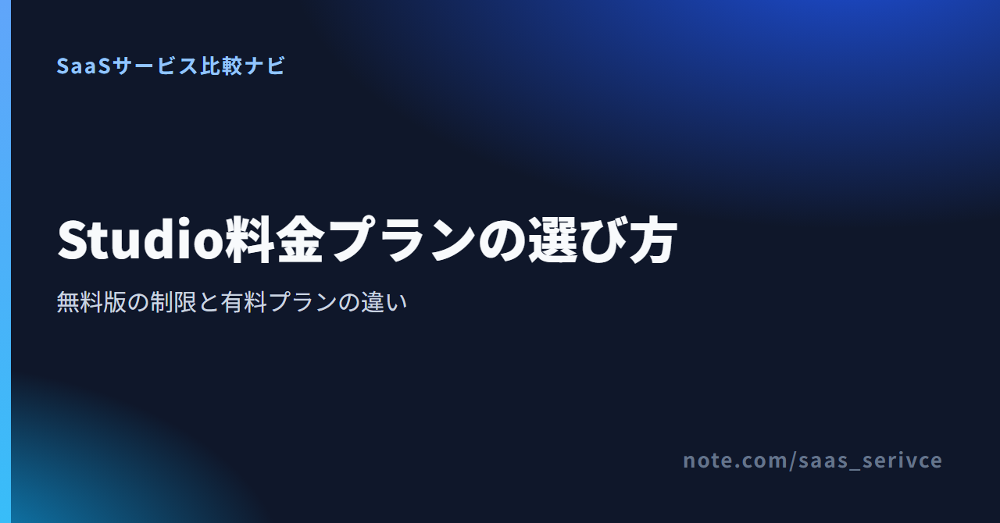
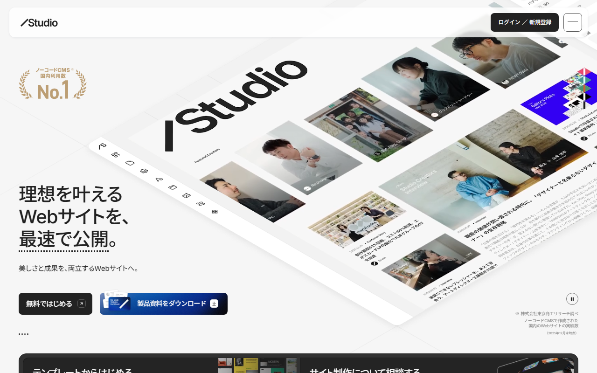

Studioは、Webサイトをデザインして公開できる国産のノーコードサービスです。無料で始められますが、独自ドメインやCMSの必要性によって選ぶプランが変わります。
この記事では、6つの料金プランと無料版の範囲を紹介し、年払いと月払い、支払い方法、解約時の注意点までまとめました。
Studioには、無料のFreeから要見積のEnterpriseまで6プランがあります。料金はサイト単位で発生し、日本居住者向けの表示は税込です。
月払いと年払いの価格に加え、各プランの機能差を見られます。

公式の料金ページでは、この3プランを個人利用向けとして掲載しています。法人でも選べるため、契約者が個人か法人かではなく、サイトに必要な機能で選びます。
Freeは、費用をかけずにWebサイトを公開したい段階のプランです。独自ドメインは接続できませんが、50ページと公開CMSアイテム100件まで使えます。
Miniは年払いで月額換算¥590、月払いでは¥1,290です。独自ドメインを使える一方、ページ数は2ページと404ページ、CMSモデルは3件までです。LPやシングルページに向いています。
Personalは年払いで月額換算¥1,190、月払いでは¥1,720です。150ページ、CMSモデル5件、公開CMSアイテム1,000件まで使えます。複数ページやCMS更新があるサイトなら、MiniよりPersonalが合います。
この3プランも、契約者を法人に限定しているわけではありません。サイトの規模、CMSの件数、API、セキュリティ要件で選びます。
Businessは年払いで月額換算¥3,980、月払いでは¥5,460です。バージョン管理は120日間で、Data Connect APIを1件利用できます。
Business Plusは年払いで月額換算¥9,980、月払いでは¥12,900です。バージョン管理は360日間です。APIの上限がなく、優先サポートも付きます。
Enterpriseは要見積です。ページ数とCMSは個別の要件に合わせられ、IPアドレス制限やSLA99.9％保証も備えます。支払いは前払いの銀行振込が原則で、その他の方法は要相談です。
FreeでもWebサイトを作成して公開できます。ページやCMS、フォームにも無料枠がありますが、独自ドメインの接続には有料プランが必要です。
無料版は、デザインを作るだけの体験版ではありません。サイトを公開でき、CMSも公開アイテム100件まで扱えます。お知らせや実績をCMSで更新したい場合も、まず仕組みを試せます。
フォーム回答は100件、ストレージは5GBです。公開後に想定される問い合わせ数や、画像などの保存量を考えておくと、有料化の時期を決めやすくなります。
会社名やサービス名を使った独自ドメインで公開するなら、Mini以上が必要です。Freeで公開できる範囲を試し、サイトの方針が固まってから有料プランへ移る使い方に合います。
有料化を考えるときは、ページ数とCMSをどの程度使うかも見ます。公開後に固定ページと記事をどう増やすか決めると、必要なプランを絞れます。
プラン選びでは、最初に公開目的を決めます。そのうえで、独自ドメイン、ページ数、CMS、複数人での管理が必要かを確かめると、候補を絞れます。
デザインや更新の流れを試す段階なら、Freeから始められます。料金はかからず、サイトも公開できます。社内で完成イメージを共有したいときや、小さく情報発信を始めたいときの候補です。
ただし、独自ドメインは使えません。正式な企業サイトとして公開する予定があるなら、テスト後の有料化を見込んでおきます。
独自ドメインでLPやシングルページを公開するなら、Miniが候補です。使えるのは2ページと404ページまでで、CMSモデルは3件です。公開CMSアイテムは100件まで使えます。
3ページ以上の固定ページが必要なら、150ページまで使えるPersonalを選びます。CMSモデルは5件、公開CMSアイテムとフォーム回答は各1,000件です。商品紹介や導入事例を増やすサイトにも合います。
Businessは300ページ、CMSモデル10件、公開CMSアイテム5,000件まで使えます。Data Connect APIは1件で、使えるのは一覧エンドポイントのみです。CMSの件数とAPIの範囲が足りるかを見ます。
CMSモデルが10件を超えるなら、30件まで使えるBusiness Plusが候補です。公開CMSアイテムは15,000件、APIは無制限で、優先サポートも付きます。IPアドレス制限やSLAが必要なら、EnterpriseについてStudioへ相談します。
必要なページ数やCMS利用の有無から、候補となるプランを絞れます。
Studioの有料プランは、年払いと月払いで価格が異なります。プラン料金は公開するサイトごとに発生し、アカウント全体で一括契約する仕組みではありません。
Miniの¥590、Personalの¥1,190などは、年払いを1か月あたりに換算した表示です。毎月支払う月払いの金額ではありません。
月払いでは、Miniが¥1,290、Personalが¥1,720です。Businessは¥5,460、Business Plusは¥12,900です。長く公開するサイトなら、支払い方法による総額の違いを見て選びましょう。
Studioの料金は、公開サイトであるプロジェクトごとに発生します。1つのアカウントで複数サイトを作っても、有料機能を使うサイトごとに契約が必要です。
複数プロジェクトをまとめて管理するためのワークスペースプランは、サイトの公開料金とは別枠です。社内で何サイトも扱う場合は、両者を分けて予算を組みます。
年払いと月払いの差に加え、プロジェクトとワークスペースの料金を見分けられます。
日本からは主要なクレジットカードとデビットカードで支払えます。請求書と領収書は、プロジェクトのダッシュボードから取得できます。
カード決済は3Dセキュア2.0に対応しています。クレジットカードだけでなく、対応ブランドのデビットカードも利用できます。
Enterpriseの支払いは、前払いの銀行振込が原則です。その他の支払い方法を希望する場合は、Studioへの個別相談が必要です。
日本居住者向けは、JPYで税込価格が表示されます。
請求書と領収書は、プロジェクトのダッシュボードにある「プラン＆お支払い」から取得できます。「お支払い履歴」を開き、必要な書類をダウンロードする流れです。
インボイス制度に対応した適格請求書の案内もあります。ただし、経費処理や税区分の判断は、自社の経理担当者または税理士に確認してください。
税込価格と、法人向けプランで選べる支払い条件を確認できます。
Studioのプラン料金は、サービスを利用してサイトを公開するための費用です。制作会社へ作業を依頼する場合、制作費は別途見積もりとなります。
自分でサイトを設計し、Studio上で制作するなら、必要なのは基本的にサイトごとのプラン料金です。Freeで公開する場合、Studioの月額利用料はかかりません。
独自ドメインやCMSなどが必要になった時点で、有料プランを選びます。制作に必要な素材や外部サービスの費用は、Studioのプラン料金とは分けて考えましょう。
制作会社やフリーランスへ依頼すると、サイト設計やデザイン、実装などの制作費が加わります。公開後の更新や保守まで頼むかによっても、見積もりの範囲は変わります。
Studio公式の記事では、サイトの種類と依頼先による制作費の考え方を解説しています。
相場だけで予算を決めず、見積書にStudioの利用料が含まれるかを確かめてください。制作費と公開後の月額費用を分ければ、初期費用と継続費用を把握できます。
有料プランは、契約期間が終わると自動更新されます。ダウングレードの期限と返金条件は、契約前に押さえておきたい点です。
一度有料プランを契約すると、期間終了時に同じ契約が自動で更新されます。更新を希望しない場合は、更新日の前日までにダウングレードの手続きが必要です。
年払いでは契約期間が長いため、公開終了日が決まっているキャンペーンサイトなどは特に注意が必要です。社内のカレンダーへ更新日を記録しておくと、判断の期限を逃しにくくなります。
契約期間の途中で解約またはダウングレードしても、支払い済みの料金は原則として返金されません。残っている日数分も返金の対象外です。
サイトを今後も公開し続けるかどうかは、更新日前に決めます。年払いから月払いへ変える可能性がある場合も、更新時期を先に把握しておきましょう。
自動更新とプラン変更の条件を、契約前に確認できます。
日本語で問い合わせできますが、利用できるサポート窓口はプランごとに異なります。
管理画面、エディタ、公式ヘルプは日本語に対応しています。問い合わせ方法はプランによって異なります。
Freeで使えるのはAIチャットボットのみで、有人チャットは利用できません。Mini以上は有人チャットを利用でき、Enterpriseには専用の法人相談フォームがあります。
StudioはFreeでもサイトを公開できますが、独自ドメインを使うならMini以上が必要です。LPはMini、複数ページやCMS更新があるサイトはPersonalが基準です。CMSの件数やAPIが足りなければBusiness以上へ進みます。
まずFreeで公開範囲を確かめ、必要な機能が分かってから有料プランを選ぶと、不要な費用を抑えられます。
Freeで公開できる範囲を見たうえで、必要な機能に合うプランを選べます。